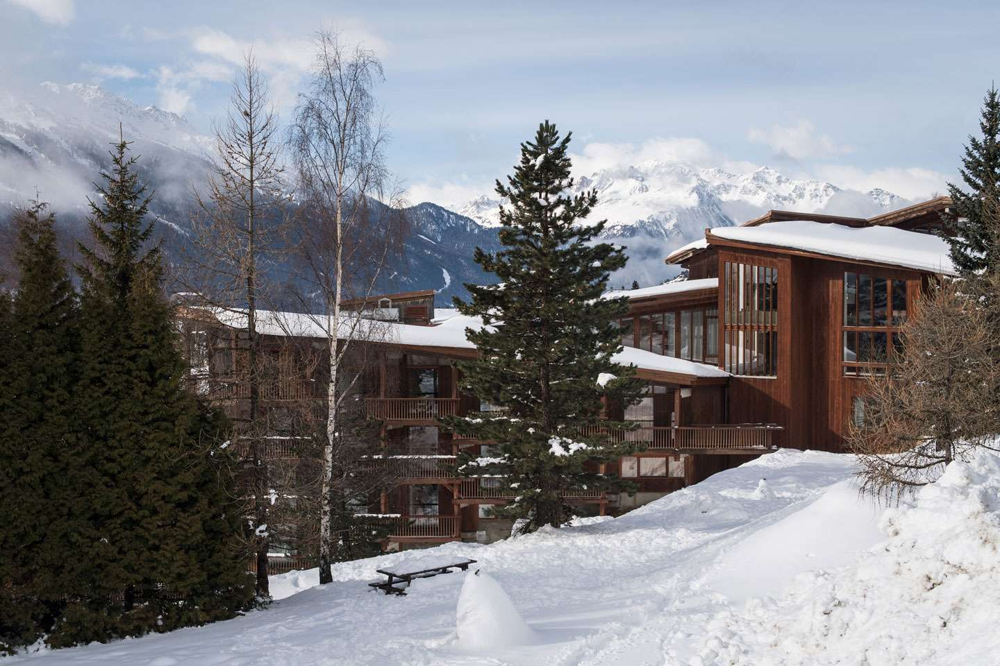

The registration is now closed and the list of participants has been fixed. Do not provide any payment data in any other way - it is very likely a scam!
Background
Large-scale semantic processing and strong computer assistance of mathematics and science is our inevitable future. New combinations of AI and reasoning methods and tools deployed over large mathematical and scientific corpora will be instrumental to this task. The AITP conference is the forum for discussing how to get there as soon as possible, and the force driving the progress towards that.
This year AITP will be co-located with a meeting of WG5 of Cost Action European Research Network on Formal Proofs.
Topics
- AI and big-data methods in theorem proving and mathematics
- Collaboration between automated and interactive theorem proving, in particular their AI/ML aspects
- Common-sense reasoning and reasoning in science
- Alignment and joint processing of formal, semi-formal, and informal libraries, Formal Abstracts
- Methods for large-scale computer understanding of mathematics and science
- Combinations of linguistic/learning-based and semantic/reasoning methods
- Formal verification of AI and machine learning algorithms, explainable AI
Sessions
There will be several focused sessions on AI for ATP, ITP, mathematics, relations to general AI (AGI), Formal Abstracts, linguistic processing of mathematics/science, modern AI and big-data methods, and several sessions with contributed talks. The focused sessions will be based on invited talks and discussion oriented. Most of the sessions will be scheduled in the afternoons to allow US participants.
Confirmed (Virtual) Participants/Speakers (TBC)
| João Araújo | Universidade Nova de Lisboa | |
| Johannes Brandstetter | Microsoft Research | |
| Kevin Buzzard | Imperial College London | |
| Walter Dean | University of Warwick | |
| Michael R. Douglas | Stony Brook University | |
| Thibault Gauthier | Czech Technical University in Prague | |
| Ben Goertzel | SingularityNET | |
| Thomas C. Hales | University of Pittsburgh | |
| Mikoláš Janota | University of Lisbon | |
| Cezary Kaliszyk | University of Innsbruck | |
| Peter Koepke | University of Bonn | |
| Michael Kinyon | University of Denver | |
| Tomáš Mikolov | Czech Technical University in Prague | |
| Alberto Naibo | University Paris 1 | |
| Miroslav Olsak | IHES | |
| Adam Pease | Articulate Software | |
| Michael Rawson | TU Wien, Austria | |
| Talia Ringer | University of Illinois at Urbana-Champaign | |
| Stephan Schulz | DHBW Stuttgart | |
| Martin Suda | Czech Technical University in Prague | |
| Josef Urban | Czech Technical University in Prague | |
| Robert Veroff | University of New Mexico | |
| Petr Vojtěchovský | University of Denver | |
| Freek Wiedijk | Radboud University Nijmegen | |
| Stephen Wolfram | Wolfram Research |
Invited talks
| João Araújo | Forbidden Substructure Theorems | |
| Johannes Brandstetter | How GNNs and Symmetries can help to solve PDEs | |
| Kevin Buzzard | Formalizing Fermat | |
| Walter Dean and Alberto Naibo | Mathematical difficulty, SAT solvers, and bounded arithmetic | |
| Ben Goertzel | The Role of Automated Theorem-Proving in Neural-Symbolic Approaches to Artificial General Intelligence | |
| Michael Rawson | ML4ATP: What I Wish I Had Known 5 Years Ago | |
| Talia Ringer | Concrete Problems in Proof Automation | |
| Stephen Wolfram | Theorem Proving in Metamathematics, the Universe and More |
Dates
- Submission deadline:
May 5Extended: May 10, 2022 - Author notification: June 13
- Conference registration: June 30
- Camera-ready versions: TBA
- Conference: September 4-9, 2022
Contributed talks
Informal proceedings
The (extended) abstracts of all the contributed talks are now available online.
Program Committee
| Jasmin Christian Blanchette | INRIA Nancy |
| Michael R. Douglas (co-chair) | Stony Brook University |
| Ulrich Furbach | University of Koblenz |
| Thibault Gauthier | Czech Technical University in Prague |
| Thomas C. Hales (co-chair) | University of Pittsburgh |
| Sean Holden | University of Cambridge |
| Mikoláš Janota | University of Lisbon |
| Cezary Kaliszyk (co-chair) | University of Innsbruck |
| Michael Kinyon | University of Denver |
| Peter Koepke | University of Bonn |
| Michael Kohlhase | FAU Erlangen-Nürnberg |
| Konstantin Korovin | The University of Manchester |
| Ramana Kumar | DeepMind |
| Adam Pease | Articulate Software |
| Michael Rawson | TU Wien |
| Stephan Schulz (co-chair) | DHBW Stuttgart |
| Christian Szegedy | Google Research |
| Josef Urban (co-chair) | Czech Technical University in Prague |
| Sean Welleck | University of Washington |
| Sarah Winkler | University of Innsbruck |
| Zsolt Zombori | Alfréd Rényi Institute of Mathematics |
AITP Program
September 4
| 19:45 | dinner |
September 5
| 14:00-16:30 Chair: Michael Douglas |
video of the whole day without the first talk Welcome Johannes Brandstetter How GNNs and Symmetries can help to solve PDEs(45m) J. Piepenbrock, J. Urban, K. Korovin, M. Olšák, T. Heskes and M. Janota Learning Instantiation in First-Order Logic (25m) Chencheng Liang, Philipp Rümmer and Marc Brockschmidt Exploring Representation of Horn Clauses using GNNs(25m) Alexei Lisitsa and Alexei Vernitski Using machine learning to detect non-triviality of knots via colorability of knot diagrams(25m) Sólrún Halla Einarsdóttir, Moa Johansson and Nicholas Smallbone Towards neuro-symbolic conjecturing (15m) Albert Jiang, Wenda Li and Mateja Jamnik Learning plausible and useful conjectures (15m) |
| 16:30-17:00 | coffee break |
| 17:00-19:30 Chair: Thomas C. Hales |
Ben Goertzel The Role of Automated Theorem-Proving in Neural-Symbolic Approaches to Artificial General Intelligence (45m) Chad Brown, Adam Pease and Josef Urban Embedding SUMO into Set Theory (25m) Simon Guilloud, Florian Cassayre and Viktor Kuncak LISA: Towards a Set-Theoretic Proof Assistant (15m) Stephen Wolfram Theorem Proving in Metamathematics, the Universe and More (60m) |
| 19:30 | dinner |
September 6
| 14:00-16:30 Chair: Stephan Schulz |
video of the whole day Joao Araujo Forbidden Substructure Theorems (45m) Thibault Gauthier Program Synthesis from Integer Sequences: Initial Self-Learning Run on the OEIS (25m) E. Aygun, L. Orseau, A. Anand, X. Glorot, S. Mcaleer, V. Firoiu, L. Zhang, D. Precup and S. Mourad Proving Theorems using Incremental Learning and Hindsight Experience Replay (25m) Martin Suda Elements of Reinforcement Learning in Saturation-based Theorem Proving (25m) Boris Shminke Project proposal: A modular reinforcement learning based automated theorem prover (15m) Jack McKeown and Geoff Sutcliffe Reinforcement Learning in E (15m) |
| 16:30-17:00 | coffee break |
| 17:00-19:15 Chair: Cezary Kaliszyk |
Talia Ringer Concrete Problems in Proof Automation (45m) Michael Rawson ML4ATP: What I Wish I Had Known 5 Years Ago (45m) Mikolas Janota, Jelle Piepenbrock and Bartosz Piotrowski Selecting Quantifiers for Instantiation in SMT (15m) Jan Hůla and Mikoláš Janota Model Discovery for Efficient Search (15m) Nikolai Antonov, Jan Hula, Mikolas Janota and Premysl Sucha Reinforcement Learning for Schedule Optimization (15m) |
| 19:30 | dinner |
September 7
| 14:00-16:25 Chair: Peter Koepke |
video of the whole day Walter Dean and Alberto Naibo Mathematical difficulty, SAT solvers, and bounded arithmetic (45m) Sean Welleck, Jiacheng Liu, Ximing Lu, Hannaneh Hajishirzi and Yejin Choi NaturalProver: Grounded Natural Language Proof Generation with Language Models (25m) Anthony Bordg, Yiannos Stathopoulos and Lawrence Paulson A Parallel Corpus of Natural Language and Isabelle Artefacts (25m) Y. Wu, A. Jiang, W. Li, M. Rabe, C. Staats, M. Jamnik and C. Szegedy Autoformalization for Neural Theorem Proving (25m) Joseph Palermo, Johnny Ye and Jesse Michael Han Synthetic Proof Term Data Augmentation for Theorem Proving with Language Models (25m) |
| 16:30-17:00 | coffee break |
| 17:00-19:30 Chair: Josef Urban |
Bartosz Piotrowski A small survey of mathematical abilities of modern transformer architectures (25m) Kevin Buzzard Formalizing Fermat (40m) Peter Koepke and Adrian De Lon Scaling Naproche (25m) Panel Discussion (J. Araujo, K. Buzzard, W. Dean, M. Douglas, P. Koepke, A. Naibo, B. Szegedy, F. Wiedijk) Fermat formalization and Future of Math (60m) |
| 19:30 | dinner |
September 8
| 14:00-16:20 Chair: Zsolt Zombori |
video of the whole day S. Tworkowski, M. Mikuła, T. Odrzygóźdź, K. Czechowski, S. Antoniak, A. Jiang, C. Szegedy, Ł. Kuciński, P. Miłoś and Y. Wu Formal Premise Selection With Language Models (25m) David Cerna, Cezary Kaliszyk and Stanislaw Purgal Sifting through a large hypothesis space: Revisiting differentiable learning through satisfiability (25m) Karel Chvalovský and Josef Urban Analyzing Proof Components (25m) Jan Jakubuv, Zarathustra Goertzel, Mikolas Janota and Cezary Kaliszyk LightGBM Hyperparameter Optimization for Clause Classification in Theorem Proving (25m) Chad Brown, Jan Jakubuv and Cezary Kaliszyk Strategies and Machine Learning for Lash (25m) Liao Zhang and Lasse Blaauwbroek Tactic Characterizations by the Influences on Proof States (15m) |
| 16:30-17:00 | coffee break |
| 17:00-18:50 Chair: Konstantin Korovin |
Christoph Wernhard Compressed Combinatory Proof Structures and Blending Goal- with Axiom-Driven Reasoning: Perspectives for First-Order ATP with Condensed Detachment and Clausal Tableaux (25m) Filip Bártek and Martin Suda Efficient Neural Clause Selection by Weight (25m) Yutaka Nagashima Evolutionary Computation for Program Synthesis in SuSLik (15m) Pedro Orvalho, Jelle Piepenbrock, Mikoláš Janota and Vasco Manquinho Project Proposal: Learning Variable Mappings to Repair Programs (15m) Adrian Groza A Corpus for Precise Natural Language Inference (15m) Zarathustra Goertzel, Adam Pease and Josef Urban Project Proposal: Formal Ethics Ontology in SUMO (15m) |
| 19:30 | dinner |
September 9
| 10:00-12:30 | Discussions in groups |
| 12:30-14:00 | lunch and departure from the center |
September 10 (optional for participants staying in Aussois)
| 10:00-16:30 | Excursion/Discussions in groups |
WG5 meeting program (preliminary)
September 5
| 9:00-11:00 | Cezary Kaliszyk Discussion of Machine-learning-based methods in TP |
| 9:00-11:00 | Peter Koepke Discussion of Controlled Natural Languages in Reasoning |
| 9:00-11:00 | Discussions in Groups |
| 9:00-11:00 | Discussions in Groups |
Picture from the conference

Pictures from the previous conferences

{kind=link}
Location, Prices and Further Local Information
The conference will take place from September 4 to September 9 2022 in the CNRS Paul-Langevin Conference Center located in the mountain village of Aussois in Savoy. Dominated by the "Dent Parrachée", one of the highest peaks of La Vanoise, Aussois is located on a sunny plateau at 1500 m altitude, offering a magnificent panorama of the surrounding mountains and a direct access to the downhill ski slopes or cross country slopes in winter. The total price for accommodation and food for the five days will be around 500 EUR (600 EUR was planned, but thanks to the EPN support registration is free). Online participation will be most likely for free but may be limited to relevant participants. 
Arrival/Departure:
Aussois is less than 2h from the airports of Lyon, Geneve, Chambery, Annecy, Grenoble and Turin. There are trains and buses to Modane from these airports. Aussois is 8km from the Modane TGV station with direct trains from/to Paris. We will organize a bus for the participants from there to Aussois. Further buses to these airports / station can be found here and it is easy to get a taxi from Modane to Aussois and back.
The first meal is dinner on September 4 and the last meal is lunch on Friday September 9 . The planned departure of our bus from Modane to Aussois is at around 19:15 pm on Sunday, September 4 . The bus will wait for the TGV train from Paris arriving to Modane at 18:46. The train starts at 14:43 in Paris Gare de Lyon, and it also stops in Lyon-St Exupery at 16:39 and in Chambery-Challes-E at 17:44. The distance from Modane to Aussois is 8km and there are taxis and alternative buses.
We have not yet set the time for the departure of the bus after lunch on September 9 . This will be optimized based on your departure flights during the conference (but taking taxi back to Modane is easy). The center will close after our last session on Friday. If you want to stay for the weekend, the center recommends Hotel des Mottets which is 5 minutes from the center and their prices are very reasonable: https://www.hotel-lesmottets.com/ . If you registered, please fill in this Google form to indicate if you plan to take our bus to Modane, your food preferences, whom you want to share a room with, if you plan to stay longer, etc.Funding
The travel and accommodation of a number of participants (approximately 17) will be supported by the Cost Action CA20111 - European Research Network on Formal Proofs.
If you want to be funded, you need to:
- Register REGISTRATION CLOSED
- Check the eligibility rules to know whether you can be funded.
- Register to EuroProofNet if not already done.
- until June 30 2022, 23:59 AoE email us (cezary.kaliszyk at uibk.ac.at) with the dates you will be attending, a quote of your flight/train/bus (screen capture is fine), the total cost of your flight/train/bus trip in Euros. Please include the information about your age, gender, university/laboratory/team, and position (student/PhD student/researcher) so we can take these into account according to the COST criteria.
- Notifications will be sent in the next 3 days. Members who will be funded will be chosen by taking into account the following criteria in order: importance wrt the research coordination objectives; inclusive target countries; age; gender; team with low resources; balance over the action life time between people, teams, countries and working groups.
- After the meeting, and within 2 weeks, upload on e-cost a copy of your flight/train tickets. Note, that the selected participants will have 2 weeks to accept the invitation sent from e-cost. If you do not accept the invitation on e-cost within the 2 weeks, you will not be able to be reimbursed.
- The support will be a flat rate of a little bit more than n*100 where n <= 5 is the number of nights.
- See also the EPN Reimbursement Rules.
COST (European Cooperation in Science and Technology) is a funding agency for research and innovation networks. Our Actions help connect research initiatives across Europe and enable scientists to grow their ideas by sharing them with their peers. This boosts their research, career and innovation.
The details of the funding allocation are still being clarified.
 |
 |
 |